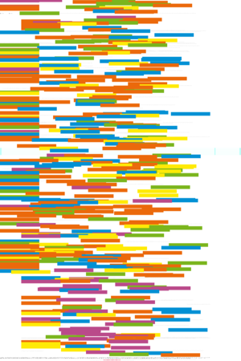
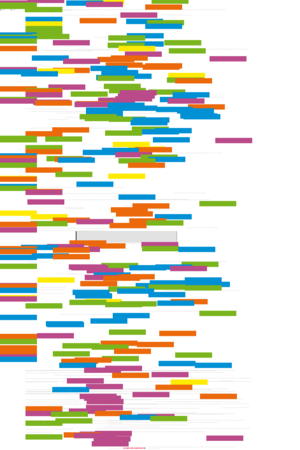
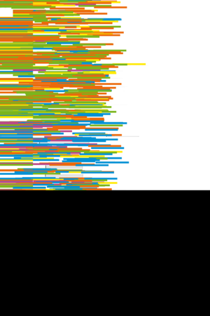
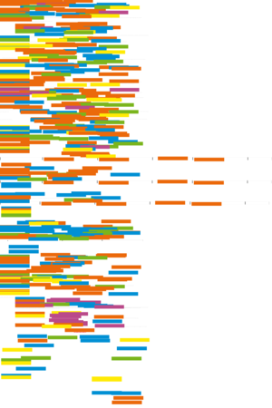

| About IR |
| Editors |
| Author instructions |
| Copyright |
| Author index |
| Subject index |
| Search |
| Reviews |
| Weblog |
| Register |
| Home |
Volume 8 No 3 April, 2003
Mike Thelwall
What is this link doing here? Beginning a fine-grained process of identifying reasons for academic hyperlink creation
Terrence A. Brooks
Web search: how the Web has changed information retrieval
Pia Borlund
The IIR evaluation model: a framework for evaluation of interactive information retrieval systems
Pirkko Jääskeläinen
Competency in network use as a resource for citizenship: implications for the digital divide
Resúmenes en Español
Watch this: corralling wild bits — one of a series of occasional columns by Terrence A. Brooks of the Information School, University of Washington, USA.
Reviews
 Donald O. Case (2002) Looking for information: a survey of research on information seeking, needs and behavior. San Diego: Academic Press., 2002.
Donald O. Case (2002) Looking for information: a survey of research on information seeking, needs and behavior. San Diego: Academic Press., 2002.
Fornäs, Johan, Klein, Kajsa, Ladendorf, Martina, Sundén, Jenny and Sveningsson, Malin, (eds.). Digital borderlands: cultural studies of identity and interactivity on the Internet. New York, NY: Peter Lang Publishing, Inc., 2002.
Gorman, G.E., ed. The digital factor in library and information services. (International Yearbook of Library and Information Management 2002/2003) London: Facet Publishing, 2002.
Hornby, Susan and Clarke, Zoë, eds. Challenge and change in the information society London; Facet, 2002.
McClure, C.R., Lankes, R.D., Gross, M. and Choltco-Devlin, B. Statistics, measures and quality standards for assessing digital reference library services: guidelines and procedures. Syracuse, NY: Syracuse University, Information Institute of Syracuse, [n.d.]
McDermott, Irene E. The librarian's Internet survival guide: strategies for the high-tech reference desk. Edited by Barbara Quint. Medford, NJ: Information Today, Inc., 2002.
McFarland, David Sawyer Dreamweaver MX: the missing manual. Sebastapol, CA: O'Reilly/Pogue Press, 2002.
McKitterick, David, (ed.) Do we want to keep our newspapers?London: Office for Humanities Communication, 2002.
Mintz, Anne P. (ed.) Web of deception. Misinformation on the Internet.Medford, N.J.: Information Today, Inc. 2002.
New journals from Haworth Information Press Binghampton, NY: Haworth Information Press 2002.
Rheingold, Howard. Smart mobs: the next social revolution. Cambridge, MA: Perseus Publishing, 2002.
Rosson, Mary Beth and Carroll, John M. Usability engineering: scenario-based development of human computer interaction. Redwood City, CA: Morgan Kaufmann, 2001.
Saint-Onge, Hubert and Wallace, Debra. Leveraging communities of practice for strategic advantage. Boston, MA: Butterworth-Heinemann, 2003.
Sawyer, Deborah C. Smart services: competitive information strategies, solutions and success stories for service business. Medford (NJ): Information Today, Inc., 2002.
Williamson, Kirsty. Research methods for students, academics and professionals. Information management and systems. 2nd ed. Wagga Wagga, NSW: Charles Sturt University, 2002.
What's in the open access e-journals?
Conference announcements
A message to Conference organizers.
iSHIMR 2003, The Eighth International Symposium for Health Information Management Research, Borås, Sweden, 1-3 JUNE 2003
Conference announcement: Toward a user-centred approach to digital libraries, Espoo, Finland, 8-9 September 2003
ISIC (Information Seeking in Context) 2004, Dublin, Ireland, 1-3 September 2004
Check the other resources available at InformationR.net - free resources for information researchers. If you find Information Research useful please sign in and we'll notify you of future issues.
Contribute ideas and links to relevant resources on the Weblog. Join at
http://www.free-conversant.com/irweblog/
Information Research: an international electronic journal, is published four times a year by Professor Tom Wilson with technical support from Lund University, Sweden and editorial support from the Swedish School of Librarianship and Information Science, Högskolan in Borås.
| |||
 |
Web Counter |
||